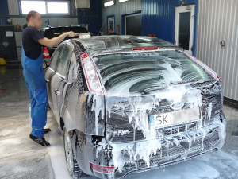

Myjnia ręczna to jeden z najprostszych, a zarazem najskuteczniejszych sposobów na usunięcie zanieczyszczeń z karoserii samochodowych.
Rezerwacja na godzinę - rezerwuj termin mycia samochodu. Masz za mało czasu? Nie lubisz czekać? Zarezerwuj mycie pojazdu na konkretną godzinę